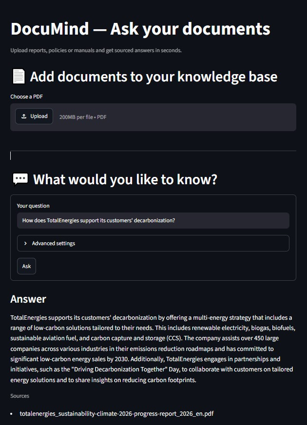

ESG Report RAG Assistant
Sustainability reports often run to hundreds of pages. This assistant lets users upload them and ask questions in natural language, with answers grounded in the document and returned with their sources. Ingestion runs as an event-driven pipeline with step tracking and automatic retries.
Stack: FastAPI, Inngest, Qdrant, OpenAI, Streamlit